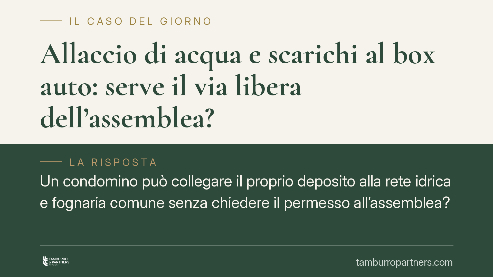

Allaccio di acqua e scarichi al box auto: serve il via libera dell'assemblea?
Un condomino può collegare il proprio deposito alla rete idrica e fognaria comune senza chiedere il permesso all'assemblea? Il Tribunale di Locri risponde di sì, qualificando l'intervento come semplice modifica dell'uso della cosa comune e non come innovazione. Una distinzione tecnica dalle conseguenze molto concrete per chi vive o investe in contesti condominiali.

Il caso
Una condomina decide di allacciare un proprio locale – un deposito classificato in categoria catastale C2 – alle reti idrica e fognaria del condominio. Il condominio contesta l'operazione, sostenendo che manchi l'autorizzazione dell'assemblea.
Il Tribunale di Locri respinge questa impostazione. Il punto decisivo è la qualificazione giuridica dell'intervento: non si tratta di un'innovazione, ma di un atto che rientra nel normale uso della cosa comune.
Inquadramento normativo
Il codice civile distingue nettamente due situazioni.
L'art. 1102 c.c. consente a ciascun condomino di servirsi della cosa comune, a due condizioni: non alterarne la destinazione e non impedire agli altri partecipanti di farne pari uso. È la norma che governa l'uso individuale dei beni condivisi e non richiede alcuna delibera assembleare.
L'art. 1120 c.c. riguarda invece le innovazioni, cioè le modifiche che trasformano la cosa comune nella sua struttura o destinazione. Queste sì presuppongono una decisione dell'assemblea, con le maggioranze qualificate previste dalla legge.
La differenza non è nominalistica. Collegare un locale alle tubature esistenti – senza alterarne la funzione né comprometterne l'uso da parte degli altri – è un'attività che sfrutta un impianto già destinato proprio a quello scopo. Secondo il Tribunale, questo è uso ex art. 1102 c.c., non innovazione ex art. 1120 c.c.
La lettura del regolamento condominiale
Un secondo passaggio merita attenzione. Nei condomìni capita spesso che il regolamento contenga clausole più restrittive della legge, ad esempio divieti o limiti all'uso di determinati impianti.
Il Tribunale ricorda un principio consolidato: le clausole del regolamento che derogano ai diritti dei condomini riconosciuti dal codice civile vanno interpretate in senso restrittivo. In altri termini, un divieto che comprime una facoltà del proprietario non può essere esteso in via analogica o presuntiva: deve risultare in modo chiaro ed espresso.
Questo significa che, in caso di dubbio sul testo regolamentare, prevale la soluzione più favorevole al diritto d'uso del singolo.
Implicazioni pratiche
Per chi possiede un box, un garage o un deposito la pronuncia è rilevante sotto più profili.
In primo luogo, l'allaccio alle reti comuni non è automaticamente subordinato a un consenso assembleare. Se l'intervento rispetta i limiti dell'art. 1102 c.c. – pari uso e destinazione invariata – il proprietario può procedere.
In secondo luogo, un eventuale rifiuto del condominio non può fondarsi su una generica contrarietà dell'assemblea. Occorre dimostrare che l'allaccio altera la destinazione dell'impianto o pregiudica concretamente gli altri condomini, ad esempio sovraccaricando una rete già al limite della capacità.
Per il condominio, al contrario, la decisione segna un confine: non basta invocare l'assenza di autorizzazione per bloccare l'intervento. Il diniego deve poggiare su ragioni tecniche verificabili.
Resta fermo un punto spesso trascurato: ogni caso va valutato in concreto. Lo stato degli impianti, il tenore del regolamento e la portata effettiva dei lavori possono condurre a esiti diversi.
Cosa fare in concreto
- Verificate il regolamento condominiale prima di procedere: individuate eventuali clausole che limitano espressamente l'uso degli impianti comuni, tenendo presente che i divieti vanno interpretati in modo restrittivo.
- Documentate lo stato dell'impianto con una relazione tecnica che attesti la compatibilità dell'allaccio con la rete esistente e l'assenza di pregiudizio per gli altri condomini.
- Comunicate per iscritto all'amministratore l'intenzione di eseguire i lavori, anche quando ritenete non necessaria l'autorizzazione: la trasparenza riduce il rischio di contenzioso.
- Conservate ogni evidenza della destinazione dell'impianto e della natura dell'intervento, elementi decisivi per distinguere l'uso ex art. 1102 c.c. dall'innovazione.
- Richiedete una valutazione preventiva quando il regolamento è ambiguo o quando l'allaccio incide su reti di capacità limitata: anticipare il problema costa meno di una lite.
---
*Contributo informativo a cura di Tamburro & Partners - Avv. Giuseppe Tamburro. Non costituisce parere legale.*
Ogni condominio ha una storia a sé.
Se gestisci un'amministrazione e vuoi un confronto su una specifica questione condominiale, scrivi allo studio. Ti rispondiamo entro un giorno lavorativo.